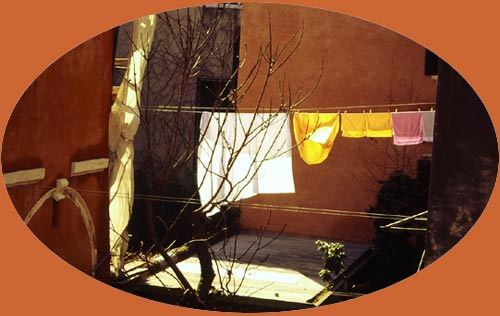
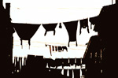
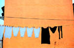
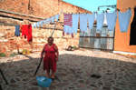

Holly Smith Pedlosky, PhotographerThe Reitia Project Italian Laundry as Art & Hanging Fabric in Italian Art Photography Workshops in Italy: Venetian Light & Life: From Within  |
|
Signora Bertarello's Sheets In the middle of my life, I found myself, quite unlike Dante, not in the middle of a dark forest, but on a luminous Lagoon, on which floated hundreds of islands, each covered with what the poet Shelley called "fabrics of enchantment piled to heaven." Shelley was talking about lace-like Venetian architecture, but everywhere I looked, I saw laundry suspended from the sky and dangling in front of walls: (please
click on the small images below to see a larger image) |
||
|  |  |  |
|
My First Success |
|
why I am photographing her husband's underwear |
|
"Ah," she would say, "If you think I am good, you should have seen my mother! She was a real Casalinga" (Italian for "old fashioned housewife"). So, I learned Italian and spent a year wandering around Venice talking to casalinghe and photographing their laundry displays.
|
||
All images on these pages are copyright © 1999 by Holly Smith Pedlosky
To order a photograph or to learn more about The Reitia Project, send e-mail to hollysmith@pedlosky.org
| Would
you like to meet some more Venetian housewives? |
Would
you like to see some more laundry? |
Would
you like to find out more about laundry, cloth, and draped fabric in Venetian art? |